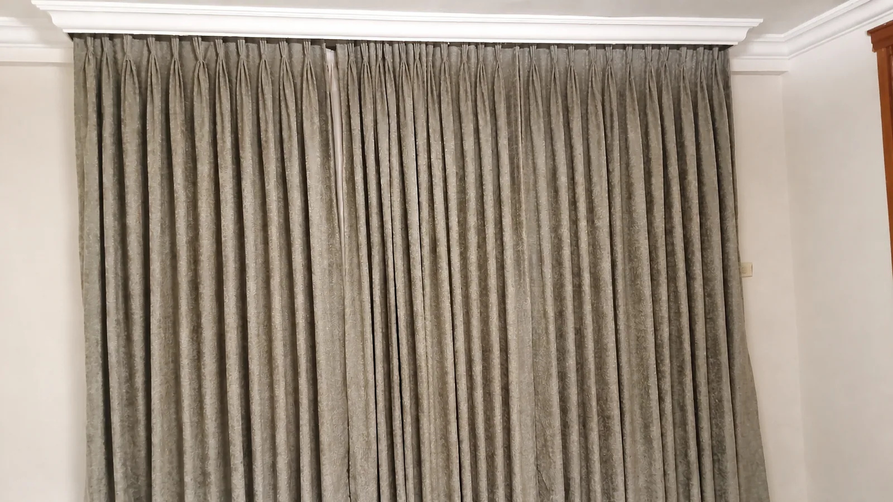
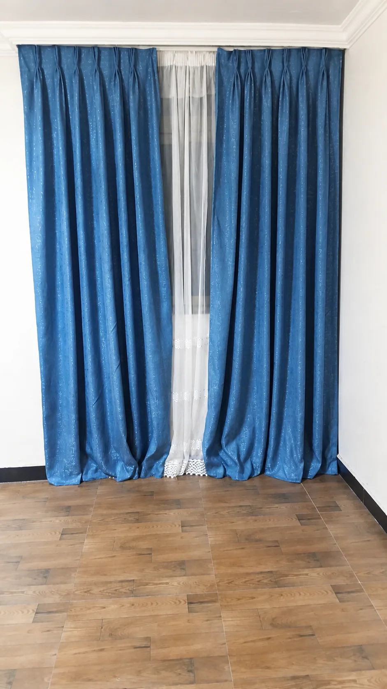
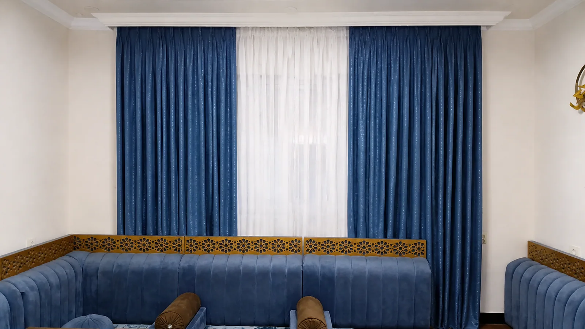
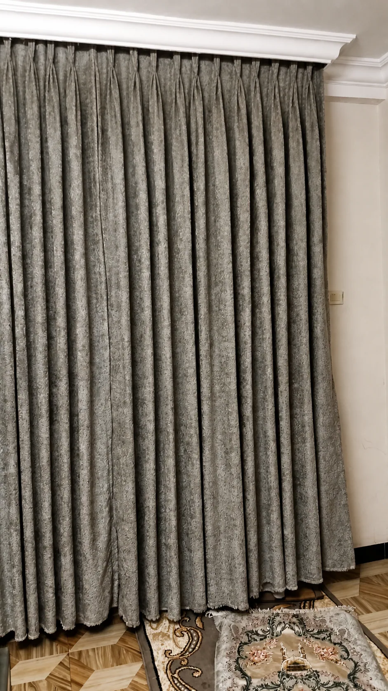
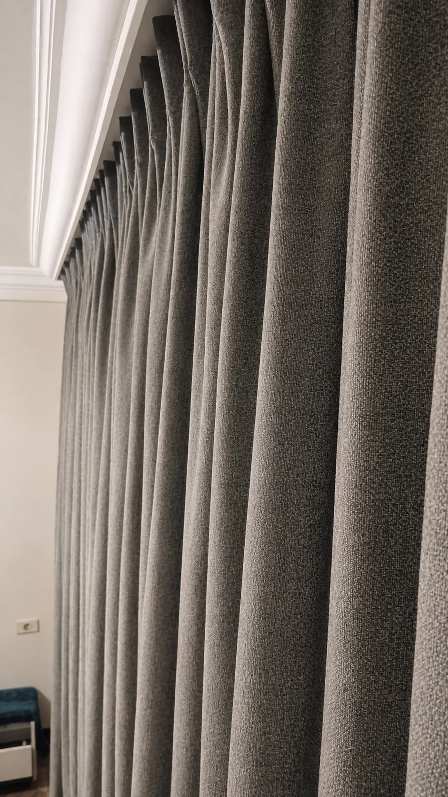

Long lobby curtains
Full-height layered sheers and drapery, tailored to bring softness and scale to a tall public space.
HOSPITALITY · WORKPLACE · RESIDENTIAL
Window treatments conceived at architectural scale—specified, made and installed with one accountable team.
01 / WHERE WE WORK
Habiba partners with decision-makers who need beauty, consistency and dependable delivery across every opening.
Full-height layered sheers and drapery, tailored to bring softness and scale to a tall public space.
A precise track-mounted system for privacy, glare control and a clean professional finish.
Warm brown drapery over soft white sheers, finished with coordinated tiebacks for an inviting home.
02 / COMPLETED RESIDENTIAL WORK
Two tailored treatments for a residential interior: richly textured grey drapery and blue patterned curtains layered with a softly filtering white sheer.

TEXTURED GREY · FULL COVERAGE

LAYERED BLUE · SOFT SHEER

COORDINATED LOUNGE

FLOOR-LENGTH FINISH

HEADING & TEXTURE DETAIL
03 / COMMERCIAL DELIVERY
Site measurement, fabric performance, lining, heading and hardware schedules.
Physical swatches, mock-ups and clear sign-off before production begins.
Coordinated making, quality control, labelling and phased installation.
Final inspection, operating guidance and a clear path for future support.
START A CONVERSATION
Share your drawings, window schedule or project brief. We’ll help shape a considered, buildable specification.
090 314 6834curtainshabiba@gmail.comDiscuss your project ↗